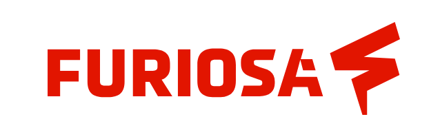
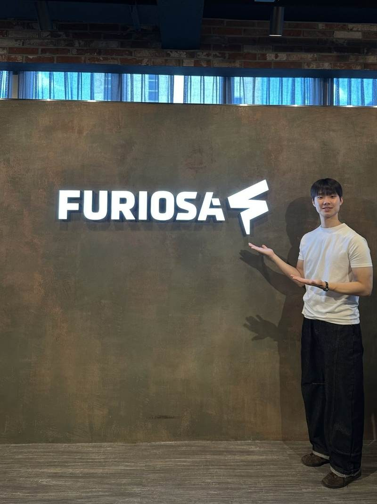

FuriosaAI LLM Application Project Presentation
From Agentic AI & RAG training to an application demo
GPU·NPU 기반 LLM Agent 및 RAG 단기강좌에서 학습한 내용을 바탕으로 팀 애플리케이션 「대학 학칙 도우미」를 구현하고, 2026년 8월 7일 FuriosaAI 사옥에서 최종 프로젝트로 발표한 경험입니다.
01 / OVERVIEW
Turning short-course practice into a working application.

단기강좌에서는 GPU·NPU 기반 LLM 추론 환경, Tool Calling, Agentic AI, MCP와 RAG를 학습했습니다. 이후 팀 프로젝트에서는 여러 학칙·교과과정 문서에 분산된 정보를 사용자의 조건에 맞춰 검색하고 근거와 함께 답변하는 RAG 애플리케이션을 구현했습니다.
기술 학습과 구현 과정은 LLM Agent & RAG 단기강좌 상세 페이지에서 이어서 볼 수 있습니다.
02 / APPLICATION
A RAG assistant for academic regulations.
학칙·교과과정·복수전공 정보가 여러 문서와 공지에 분산되어 있다는 문제에서 출발했습니다. 사용자의 학과와 입학년도 같은 조건을 먼저 입력받고, 관련 문서를 검색해 근거와 함께 답변하는 구조로 프로젝트를 설계했습니다.
User context
학교·학과·입학년도 등 사용자의 조건을 먼저 받아 검색 범위를 좁히도록 구성했습니다.
Document-grounded search
PDF·CSV 기반 규정 문서를 chunking하고 embedding한 뒤 질문과 관련된 문서 조각을 검색하도록 구성했습니다.
Grounded response
검색된 문서를 LLM Context로 전달하고 답변과 함께 관련 근거를 확인할 수 있도록 설계했습니다.
Streamlit demo
팀원이 직접 질문을 입력하고 결과를 확인할 수 있도록 Streamlit 기반 웹 UI로 구현했습니다.
Application flow: User Context → Question → Documents → Chunking → Embedding → Vector Retrieval → Metadata Filtering → LLM Answer → Relevant Sources
03 / PRESENTATION
Final project presentation at FuriosaAI.

발표에서는 해결하려는 문제와 사용자 시나리오, 문서 기반 RAG Pipeline, 사용자 조건을 반영한 검색 구조, Streamlit Demo와 구현 과정에서 확인한 한계를 중심으로 설명했습니다.
- 학사정보 탐색 과정의 불편함을 사용자 문제로 정의
- 문서 전처리·Embedding·Vector Retrieval 기반 RAG 구조 설명
- 학과·입학년도 조건을 반영한 검색 흐름 소개
- Streamlit 기반 애플리케이션 Demo
- Retrieval 품질과 문서 구조가 답변 성능에 미치는 영향 정리
04 / COMPANY VISIT
Seeing NPU systems in an industry environment.

최종 발표와 함께 FuriosaAI 사옥을 방문해 공개 전시 환경을 둘러보았습니다. 강좌에서 API와 서버를 통해 접했던 NPU 기반 inference 환경을 실제 산업 현장의 시스템과 연결해 바라볼 수 있었습니다.
Public record: 포트폴리오에는 공개 촬영 범위가 명확한 사진만 사용하며, 내부 계정·서버 주소·API Key·비공개 Endpoint 등은 포함하지 않습니다.
05 / TAKEAWAYS
Learning, building, demonstrating.
Beyond the model
LLM 애플리케이션은 모델 자체뿐 아니라 Retrieval, Metadata, Prompt, UI와 Serving을 함께 설계해야 완성된다는 점을 확인했습니다.
From training to product
새 기술을 짧은 기간 안에 학습하고 실제 사용자 문제를 정의해 동작하는 애플리케이션으로 연결했습니다.
Technical communication
시스템 구조와 사용자 가치를 한 흐름으로 정리해 외부 현장에서 발표하는 경험을 쌓았습니다.
NPU perspective
GPU 중심으로 접했던 AI 환경에 NPU 기반 inference와 serving 관점을 추가했습니다.
06 / RESOURCES
Related technical records.
LLM Agent & RAG Training
GPU·NPU, Tool Calling, Agentic AI, MCP, RAG 및 대학 학칙 도우미 구현 과정을 정리한 기술 페이지
VIEW TRAINING RECORD →Technical Repository
단기강좌 학습 내용과 공개 가능한 프로젝트 구조를 정리한 GitHub 저장소
VIEW GITHUB ↗